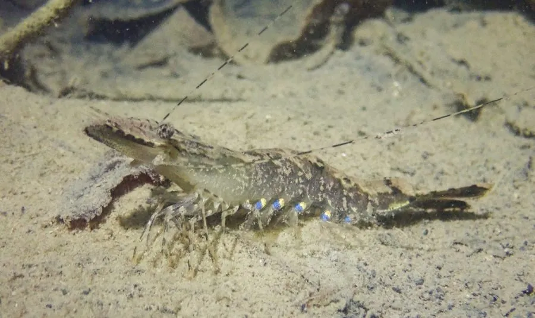

甲壳动物 · 动物界
斑节对虾 Penaeus monodon

世界上体型最大的对虾之一，体表有黑褐色横斑，生长快、肉质好，是东南亚重要的经济养殖和出口虾类。
- 分类
- 门节肢动物门纲软甲纲目十足目科对虾科属对虾属
- 栖息环境
- 河口、红树林和浅海泥沙底，幼虾在红树林中生长
- 地理分布
- 印度—西太平洋，从东非到东南亚和澳大利亚北部
- 保护级别
- 暂无评估；野生种群受捕捞压力影响
物种志
斑节对虾体长可达 30 cm 以上，体重可超过 300 g，是世界上体型最大的对虾之一。体色浅黄绿至深褐，腹部有黑褐色横斑，尾扇边缘带红色，额剑和步足有黄色斑纹。
它栖息在河口、红树林和浅海泥沙底，杂食，取食底栖动物、有机碎屑和藻类。斑节对虾原产于印度—西太平洋，从东非到东南亚、澳大利亚北部和日本南部都有分布，是东南亚地区的重要养殖虾类。它生长快、个体大，但对低温和低盐度的适应能力不如南美白对虾，养殖中需要更稳定的环境。野生亲虾曾因过度捕捞而减少，现在多依靠人工选育种群。斑节对虾的养殖历史较长，在东南亚许多国家是重要的出口水产品。
形态与习性
- 食性杂食，取食底栖动物、有机碎屑和藻类
- 体长可达 30 cm 以上，体重可超 300 g
- 识别腹部有黑褐色横斑，尾扇边缘带红色
- 养殖东南亚主要养殖虾种，需要稳定环境
- 栖息河口、红树林和浅海泥沙底
- 分布印度—西太平洋热带亚热带海域
趣味知识
- 斑节对虾是世界上体型最大的对虾之一，最大个体可超过 30 厘米。
- 它喜欢在红树林和河口生活，幼虾常在红树林中长大。
- 斑节对虾对低温比较敏感，养殖时要注意水温稳定。